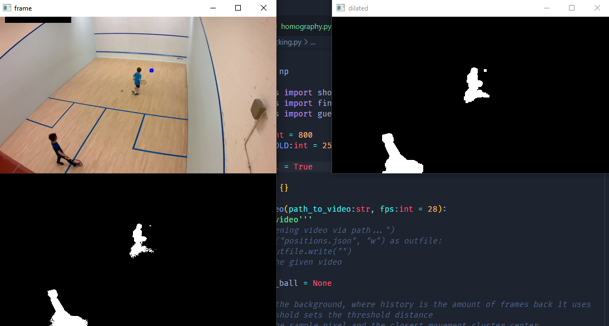
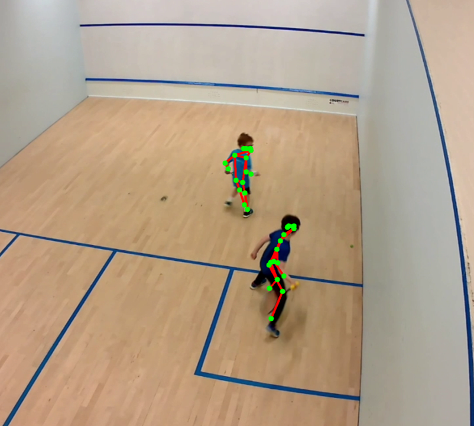

Squash AI
This is a rudimentary explanation of the of the Squash AI program, if you want more details, contact me via LinkedIn.
Introduction
What is SquashAI? Why did I make it? And why is it important?
SquashAI is a mobile application intended to help squash players improve their game. It does this by providing a way to track the player's performance and provide feedback on how to improve. It also provides a way to track the player's progress over time.
I made it because I wanted to improve my own game, and I thought that this would be a good way to do it. I also wanted to learn more about machine learning, and this seemed like a good way to do that as well.
As I progressed in the project, I realized that it could be used to help other players improve their game. Coaching is expensive, and this should be way cheaper to run. In addition, coaches aren't statisticians. They can't tell you how your game has changed over time with the accuracy that a computer can.
In addition, I was kinda fed up of all the other sports having stats like RBI (baseball), passing yards (american football), and PPG (basketball).
We're in the Olympics now, we better act like it.
How it works
There is one point of data collection: the video. Recorded from a single smartphone, a video can either be streamed live into the program, or it can be uploaded from the device's storage.
Once there is a feed, the real work can begin. Three key data points are collected every frame.
- The position of the ball
- The positions of both players
- The bounds of the court
1. Ball Tracking
We can leverage basic computer vision techniques (KNN background detection, dilation, and more) with OpenCV to get the position of the ball ~90% of the time.
This is based off an attempt by Duncan Morris[^1], but I've made some changes to make it more robust.
Which when rendered looks like this:

2. Player Tracking
Using the Apache 2.0 licensed MoveNet, developed by Google, we can get the following data:
"A float32 tensor of shape [1, 1, 17, 3]. The first two channels of the last dimension represents the yx coordinates (normalized to image frame, i.e. range in [0.0, 1.0]) of the 17 keypoints (in the order of: [nose, left eye, right eye, left ear, right ear, left shoulder, right shoulder, left elbow, right elbow, left wrist, right wrist, left hip, right hip, left knee, right knee, left ankle, right ankle])." [^2]
Rendered:

[^1]: From Duncan Morris' blog post
[^2]: From Google's Writeup